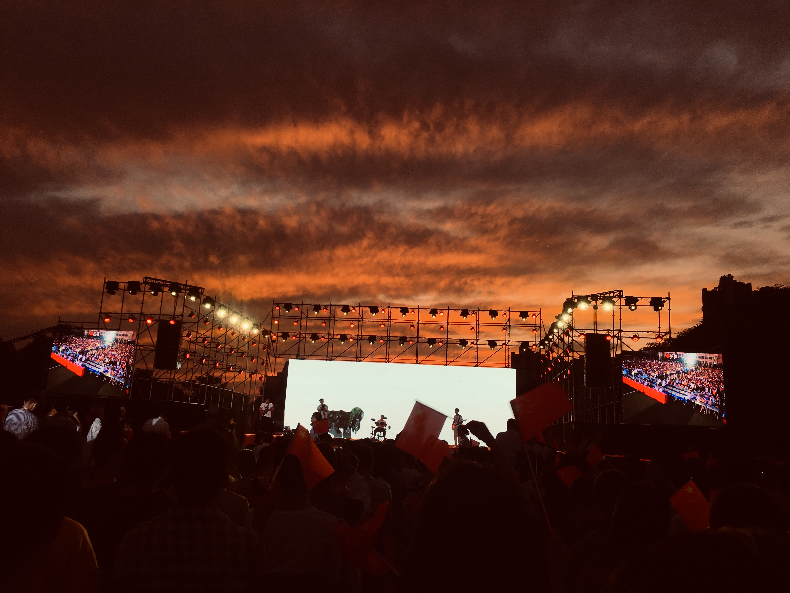
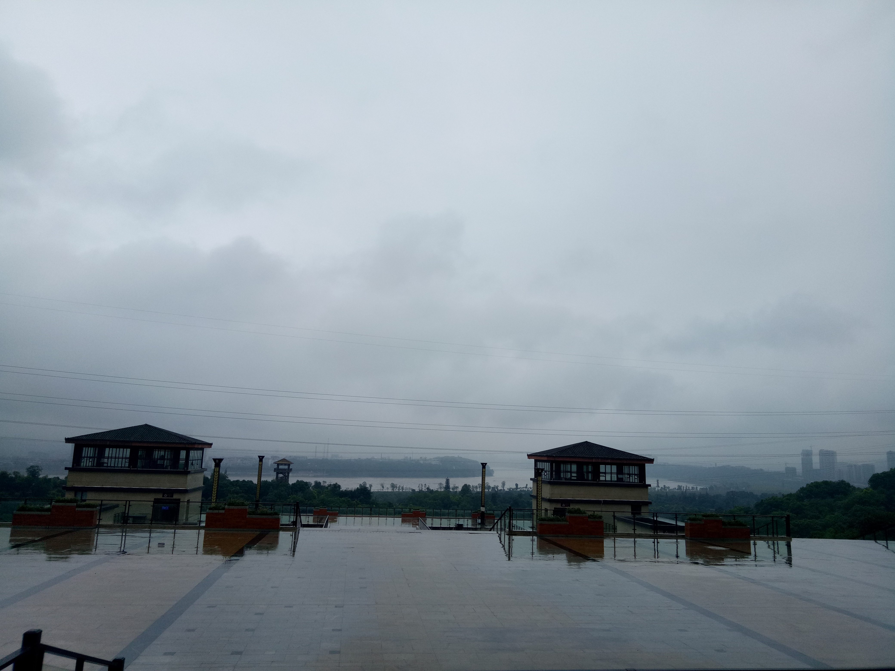

热爱生活
生活是一场直播，也是自我认清与调整的过程。在这样的过程中，你需要为一些决定和选择承担后果。
幸福还是沮丧，完全取决于你对待当下的态度。倘若你决定做某件事情，是你所喜欢且甘愿的，那么，果断选择后，就不要再质疑，只管埋头付出，然后耐心等待收获。
不是所有的人都可以在一件事情上找到乐趣，也不是所有的人都清楚日常生活中，什么是自己的必需品，什么不是，所以才会繁衍出种种焦虑与纠结。用心体会你当下的每一个生活状态，真诚善待每一个人，是认清自己的成长之路。每个人都是独立的个体，有个性，也有弱点；有局限，也有强项。在此期间，做到对外界一切人、事、物取舍恰当，平静而为，少点功利心，就能从平静中得到自由的力量。
生活记录

